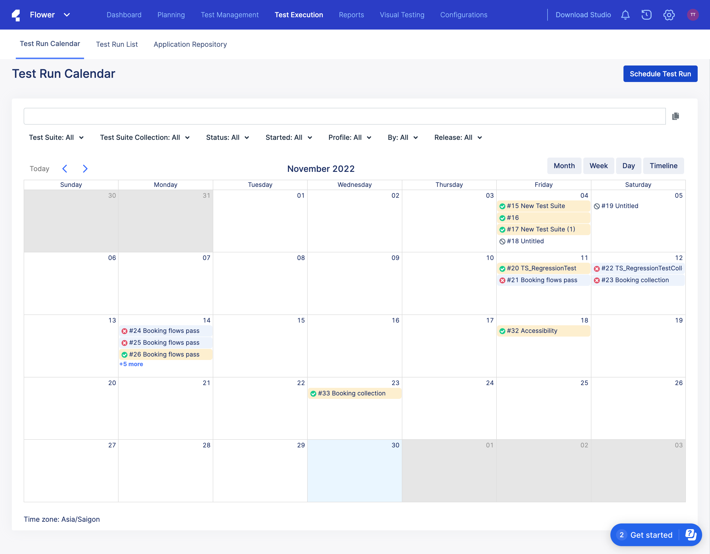
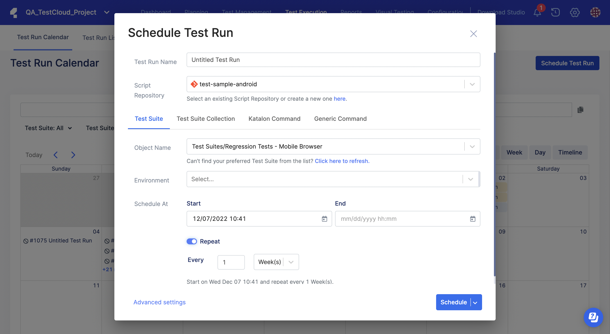
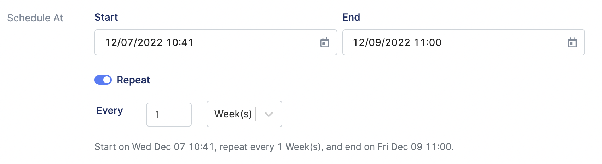
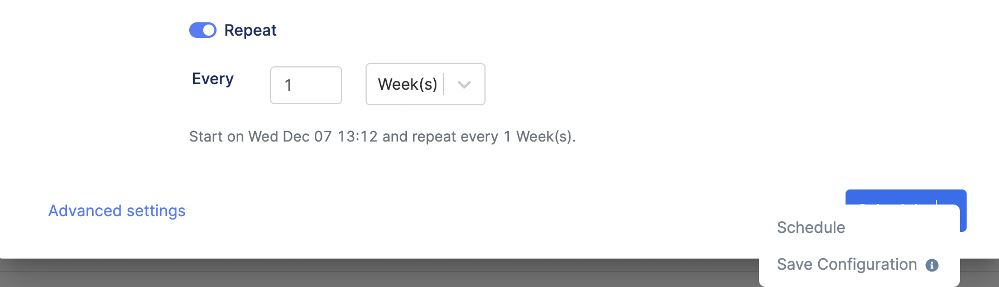

Schedule Test Runs
- Go to your Project and select the Test Execution tab.
The Test Run Calendar page appears as shown below:

- Click Schedule Test Run.
The Schedule Test Run dialog appears as shown below:

- Enter a name for the test run, then select your repository from the Script Repository drop-down.
- Choose an option:
- Test Suite: Run test suites created in TestOps or from Katalon Studio (KS).Note:
- Make sure to download a new local agent to execute test suites in the local environment. For more information, see Create a Local Test Environment with an Agent.
- Make sure Kobiton integration is disabled because you can only execute test suites on desktop applications (browsers). You can toggle Kobiton off in advanced settings. For more information, see Advanced settings.
- Test Suite Collection: Select the Test Suite Collection directly from KS. Katalon TestOps automatically fetches your Test Suite Collection. For more details, see ../../Cloud_based_test_execution/Test_execution_with_TestCloud/override-test-environment-in-a-test-suite-collection/Override_test_environments_in_a_test_suite_collection.html.
- Katalon Command: Execute tests with KS. The Katalon commands can be generated from KS in the Katalon Command dialog). For more details, see Command Syntax.
- Generic Command: Execute tests with other frameworks outside KS (e.g., Pytest).
Note:- If you choose Test Suite or Test Suite Collection, the Visual Testing section is available. You can specify an existing baseline collection to associate it with the scheduled test runs. If you do not specify a baseline collection, TestOps automatically generates a new baseline collection when the test run schedule is executed.
For more information on visual testing, see TestOps Visual Testing.
- Test Suite: Run test suites created in TestOps or from Katalon Studio (KS).
- In the Environment section, click on the drop-down menu and select from the suggested environments.
- Set the Start date for your test, then:
- To run tests periodically, turn the Repeat toggle on, set the End date and the interval you want to run the tests, then click Schedule.

- To run tests immediately, turn the Repeat toggle off, then click Run.
- To run tests periodically, turn the Repeat toggle on, set the End date and the interval you want to run the tests, then click Schedule.
- If you want to save the configuration without running tests, click the drop-down arrow, then select Save Configuration.

You can come back another time to run tests manually. See: Execute test run manually.